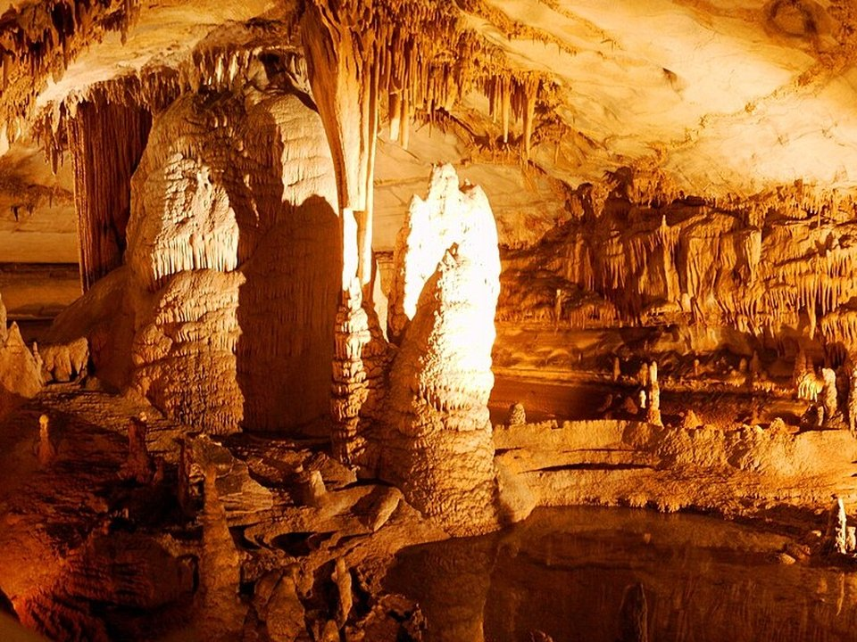

Ozark Folk Center · State park cabins
Cabins at the Ozark Folk Center
Wooded cabins at the state park, with a seasonal pool.
Official details for Cabins at the Ozark Folk CenterFolk music and caverns in the Ozarks.
Mountain View calls itself the folk-music capital of the world, and on weekend evenings musicians gather on the courthouse square with fiddles, banjos and guitars. Land at the town airport, stay in a cabin at the Ozark Folk Center, watch craftspeople and hear mountain music, tour Blanchard Springs Caverns and fish for trout on the White River.

Time illustration: direct distance at 150 KTAS plus 15 minutes for departure and arrival, matching the discovery page. Use ForeFlight for your actual flight plan.
7M2, Mountain View Wilcox Memorial Field, is a non-towered city airport with a 4,502-foot runway and 100LL, close to town.
Mountain View Wilcox Memorial Field, Mountain View, AR
Small airport with limited services; call ahead for fuel, parking and a ride. Ridges and valley fog nearby. No live fuel price is shown.
Ozark weather: valley fog on summer and fall mornings, fast-building summer thunderstorms, spring severe weather, and ridges up to about 2,500 feet. About 660 nm from Myrtle Beach: plan a fuel stop and three nights.
Rates and availability need travel dates. Festival weekends book early.
Wooded cabins at the state park, with a seasonal pool.
Official details for Cabins at the Ozark Folk CenterInns, motels and cabins in Mountain View.
Arkansas Tourism for More places to stayPrices and availability for your dates, through our partner Stay22. This is an affiliate link: we may earn a commission at no cost to you. The picks above are never paid.
Reserve weekend dinners.
Fried chicken and country cooking atop the hill at the Folk Center.
Official details for The Skillet RestaurantCafés and catfish around town.
Arkansas Tourism for More restaurantsCheck the Folk Center’s music schedule.
Blacksmiths, potters, weavers and evening music shows.
Arkansas State ParksFree, informal jam sessions around the courthouse on weekend evenings in season.
Arkansas TourismGuided tours of a living cave in the Ozark National Forest.
U.S. Forest ServiceThis prototype links to the local visitor site. It does not yet match events to your travel dates.
A town-wide celebration of Ozark music.
Arkansas Tourism for Arkansas Folk FestivalShows at the Folk Center and pickin’ on the square.
Arkansas State Parks for Music seasonOzark hardwoods turn.
Arkansas Tourism for Fall colorCheck the local calendar when choosing a weekend, and confirm dates and tickets with the organizer.
A sample music weekend. Plan three nights for the flight. No bookings or availability confirmed.
Land at 7M2 mid-morning.
Lunch at the Skillet.
The Folk Center crafts village, then back to the airport.
Land at 7M2, subject to weather and your actual flight plan.
The Folk Center crafts village.
Pickin’ on the square.
Blanchard Springs Caverns.
Trout fishing on the White River.
An evening show at the Folk Center.
Breakfast at the Skillet.
Return the car and allow time at the airport.
Afternoon thunderstorms build in summer; leave early.
Blanchard Springs Caverns.
White River trout fishing.
Pickin' on the square.
These details make the difference between an appealing list and a usable getaway.
A cabin and a ride first.
About 660 nm. Plan a fuel stop and three nights.
Small field with limited services; call ahead.
April to October.
Picks and links reviewed by WingAway Weekends. Hours, prices, menus and availability change often, so confirm directly with each place before booking. Spotted something out of date, or have a favorite we missed? Email us at hello@wingawayweekends.com.
WingAway Weekends helps you discover the destination. Use ForeFlight and current official aviation information for route, performance, weather, NOTAMs and preflight decisions. Flight planning and PIC responsibility stay with the pilot.
One fly-in weekend, a Fly to Lunch pick and the newest guides, about once a month.
Free. Unsubscribe anytime.